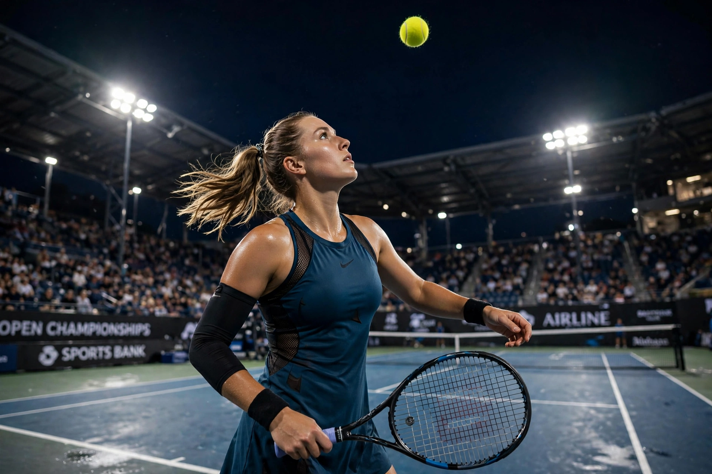

From Wikipedia, the free encyclopedia
| Serena Williams | |
|---|---|
 Serena Williams mid-serve at the US Open, ball tossed high overhead | |
| Born | 26 September 1981, Lynwood, California, US |
| Turned pro | 1995 |
| Retired | 2022 ("evolved away") |
| Plays | Right-handed (two-handed backhand) |
| Grand Slam singles | 23 titles (Open Era record) |
| Career titles | 73 WTA singles titles; 4 Olympic gold medals |
Serena Jameka Williams (born 26 September 1981) is an American former professional tennis player. She was ranked world No. 1 in singles by the WTA for 319 weeks, and won 23 Grand Slam singles titles, the most by any player in the Open Era and second only to Margaret Court's 24 overall. Widely regarded as one of the greatest tennis players — and athletes — of all time.
Williams was coached by her father Richard on the public courts of Compton, California, alongside her elder sister Venus, with whom she also won 14 Grand Slam doubles titles without losing a final. She won her first major at the 1999 US Open at 17, completed the "Serena Slam" twice (holding all four majors at once, 2002–03 and 2014–15), and won the Australian Open in 2017 while pregnant, her 23rd major, surpassing Steffi Graf's Open Era record. She returned after childbirth to reach four more major finals and announced she was "evolving away" from tennis after the 2022 US Open.
Williams revolutionised power tennis in the women's game, with the most potent serve in its history, and became a cultural figure beyond sport through fashion, business investment (Serena Ventures) and advocacy on race and gender pay. She and Venus hold joint records across singles and doubles, including four Olympic gold medals for Serena.
Categories: 1981 births | Living people | American female tennis players | Grand Slam (tennis) champions